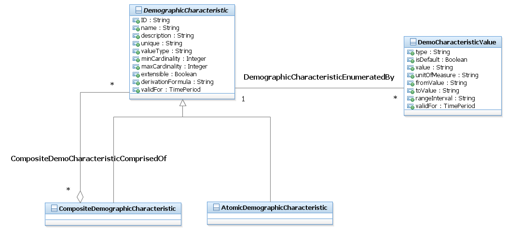

SID Models::Common Domain::Party ABE::_Party Addendum Figures::Figure P.09 - Demographic Characteristic Business Entities Diagram Figure P.09 - Demographic Characteristic Business Entities Demographics deal with the study of individuals and organizations (Parties), including their size, growth, density, and distribution, as well as statistics regarding birth, marriage, disease, and death. Demographic data is information about parties that allows decisions to be made such as the make-up and size of a market segment, classification and ranking of customers, and so forth. Demographics provide the key “what” information and can be broken down into two categories: individual demographics and organization demographics.Individual demographic data provides information pertaining to the consumer market. Examples of this type of demographic are: • Age, income, education, vehicle registration, gender, ethnicity, and the source of the information • Geography, or sizing, demographics • Number of households • Number of telephone lines (single vs. multiple, switched vs. dedicated) • Population • Telecom spending by segment related back to another demographic (wireless, calling features, calling card, etc.)Organization demographic data provides information pertaining to the non-consumer market. Examples of business demographic data are: • Standard industry (SIC) code (for vertical industries) • Geographic dispersal • Headquarters location, number and location of offices (domestic vs. international, regions/triads); each have different access requirements • By hierarchy (headquarters vs. regions vs. sales offices) • Existing networks • Private vs. frame relay • WAN/LAN (in every office vs. stand-alone) • By SIC code (partially) • Network equipment • Centralized vs. distributed processing • Applications (Human Resources, Payroll, FTP, Intranet, and so forth) • Voice mail, audio/video • Infrastructure setup (type of computer) by geography • Usage (switched vs. dedicated, intra-company vs. intercompany) • Features (large sales force could indicate use of calling cards); related to number and type of employees • Number of employees by type (for example, sales force) • Number of customers and prospects • Geographies covered • Target markets • Sales channels • Current telecom spending by product (inbound vs. outbound vs. calling card) • Date acquired, current provider, provider products • Percent of existing telecom bill spent with the service provider by product • Public information (revenue, profit, employees, and so forth)The business entities that support PartyDemographic (and also support PartyProfileType and MarketSegment as described later) should be generic enough to allow new demographic characteristics and other types of characteristics to be defined as needed. To accomplish this, the Demographic entity employs the Characteristic Spec/Characteristic pattern used throughout the SID. PartyDemographic also employs the Composite/Atomic pattern to represent collections of related DemographicCharacteristics.Note: This pattern is used throughout the Market/Sales domain. Additional information about the Characteristic pattern can be found in GB922 Root guide book. The application of the pattern in the Market/Sales domain does not use all the association classes defined by the pattern; if needed, they can be added by a SID implementer.An example of the use of the Composite/Atomic pattern from the list of example demographics above is a CompositeDemographicCharacteristic called “employee type and number” that aggregates the AtomicDemographicCharacteristics “type employee” and “number of employees”.The DemographicCharacteristicValues for "type employee" might be engineer, salesperson, administrator and the values for ""number of employee" might be 0-50, 51-100, 101-500, +500.A PartyDemographic is a feature or quality used to make recognizable or to define a Party playing a PartyRole, such as age, income, education, revenue, and so forth. The figure below shows the entities that make up the PartyDemographic ABE. Notice that PartyDemographic also uses the Composite/Atomic pattern for defining PartyDemographics that are aggregates of other PartyDemographics. For example, a standard of living composite may be the aggregation of income level, value of investments, and home value (assuming a home is not an investment!).Note that one of the members of the associations from PartyDemographicValue to DemographicCharacteristic and DemographciCharacteristicValue are of cardinality of 0,1. This is because not all DemographicCharacteristics have a set of defined values. For example, a characteristic of children’s names does not have set of “valid” values, but is entered as text for an instance of PartyDemographicValue; in this example there is not an instance of the association between PartyDemographicValue and DemographicCharacteristicValue. Similarly, if there is a set of DemographicCharacteristic values (1, 2, 3 or more) for number of children living at home, there is an instance of the association between PartyDemographicValue and DemographicCharacteristicValue, but not one between PartyDemographicValue and DemogrpahicCharacteristic. This second association is derived via the first association.

Properties:
View
Name
Figure P.09 - Demographic Characteristic Business Entities